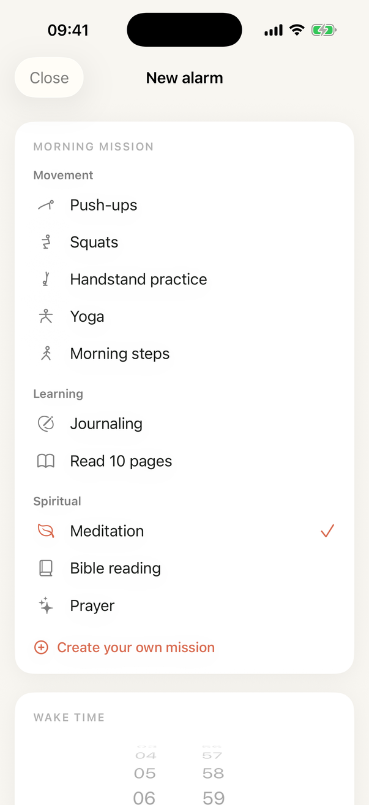

First Step › 21 day Bible reading challenge
Twenty-one mornings, a fixed reading, starting on a Monday with everyone else. The alarm does not stop until you have begun, and that is the whole trick.
Set one alarm. Choose Bible reading as its morning mission. For twenty-one mornings the alarm rings until you have started, and Stop only buys you ninety seconds before it comes back. When you finish, it stops and the day is yours.
That is the entire challenge. There is no leaderboard, no group chat and nothing to sign up for. The only thing you are competing with is the version of you that would have snoozed.

A reading at a fixed time holds where a reading whenever you get to it does not. Most people who fall out of the habit did not decide to stop, they just let the phone get there first.
We publish the research and it says the opposite: the median is 66 days, with a range from 18 to 254. Any challenge promising a habit in three weeks is selling you something.
What twenty-one days does is prove you will show up, which is the part almost nobody gets past. Most people who want a morning habit have never strung together a fortnight of actually starting one. Do that, and the sixty-six stops sounding theoretical.
One week free, then £5.99 a month or £39.99 a year. No separate charge for the challenge: it is the app you already have. If it is not for you, cancel inside the week and you will not be charged. The challenge does not change the price, add a tier or ask for anything else.
The streak goes back to zero and your level stays exactly where it was. That is deliberate. A missed morning costs you the run, never the months behind it, and the same study found one missed day made no measurable difference. Two in a row is where it starts to matter, so the only rule worth keeping is to come back the next morning.
Download First Step, set tomorrow's alarm, pick bible reading and leave the phone across the room. That is the whole of it.
Get First Step for iPhone and start on Monday.
No, and we are not going to pretend otherwise. The best evidence, a UCL study following people for twelve weeks, puts the median at 66 days with a range from 18 to 254. What 21 days does is prove you will show up, which is the part most people never get past.
One week free, then £5.99 a month or £39.99 a year. No separate charge for the challenge: it is the app you already have.
You lose the streak and keep the level. Nothing else happens, and the same UCL study found a single missed day made no measurable difference to habit formation. Two in a row starts to, so come back the next morning.
No. Starting with everyone else is more fun and gives you people to compare notes with, but the alarm does not know or care what day you began.
Change it. The alarm takes any of the ten missions, or one you write yourself. The point is twenty-one mornings you got up for, not twenty-one mornings of Bible reading specifically.
One week free, then £5.99 a month or £39.99 a year. iPhone, iOS 26.
Download on the App Store